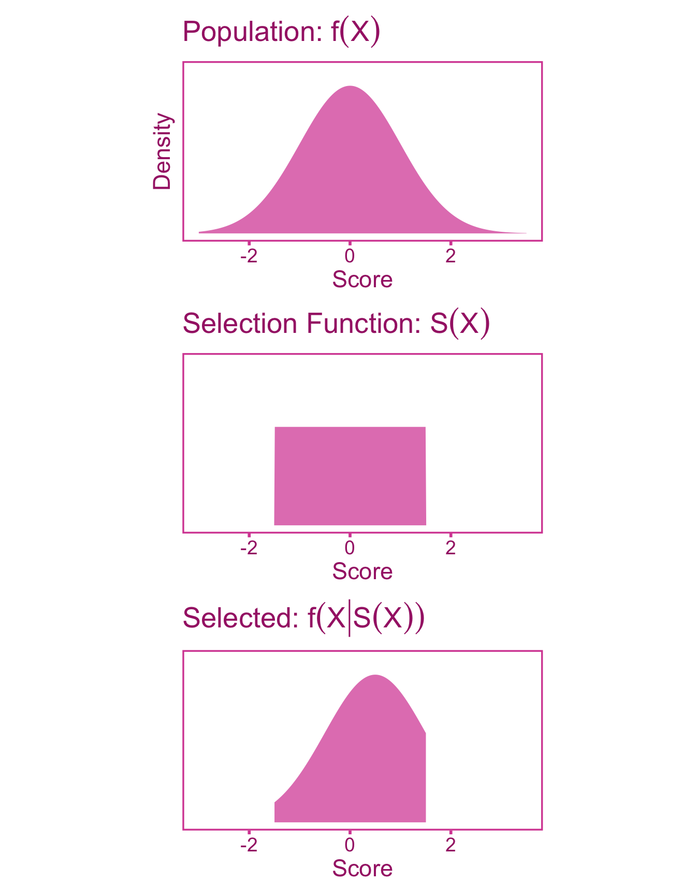
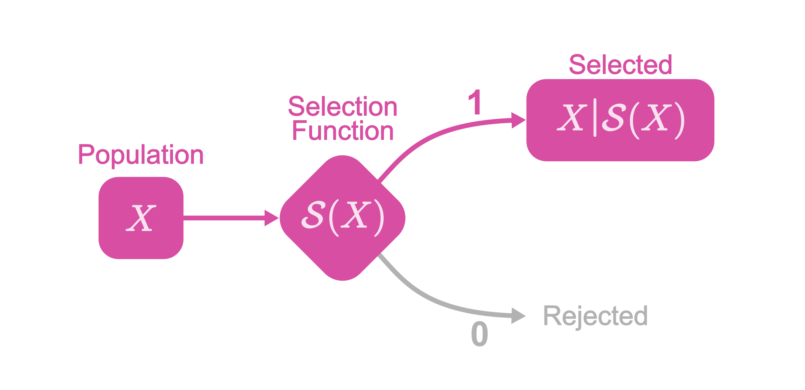
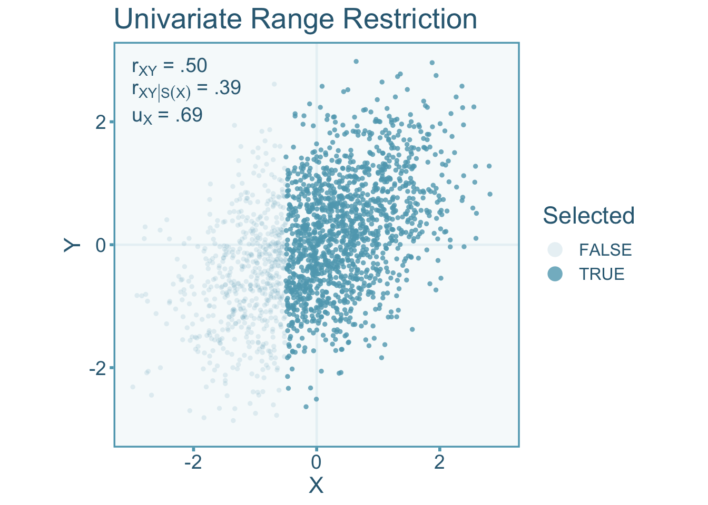
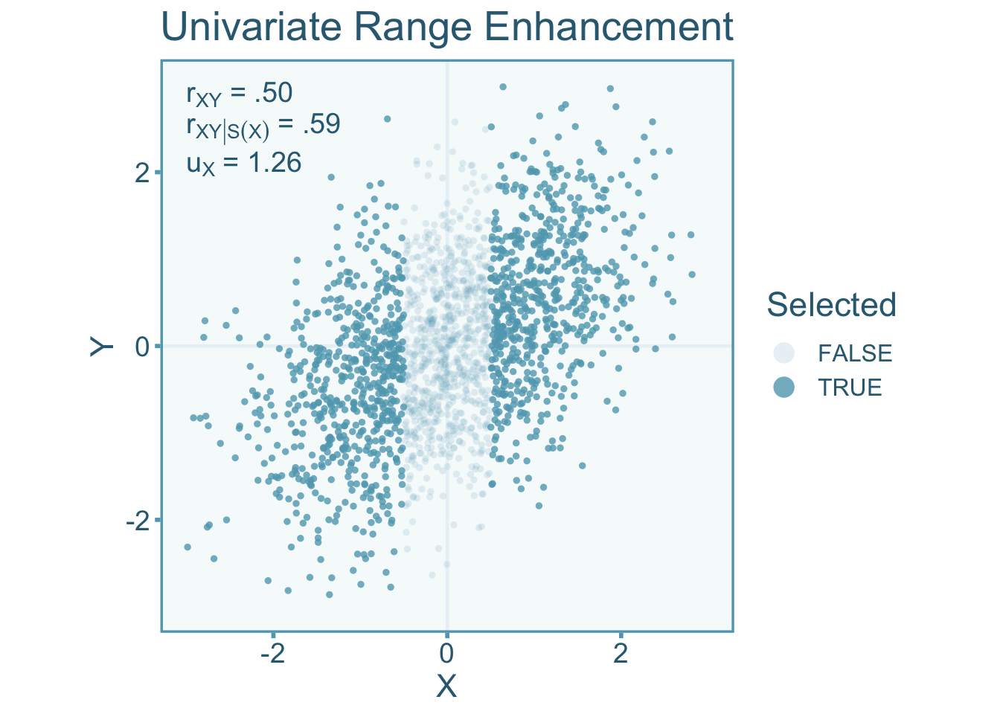
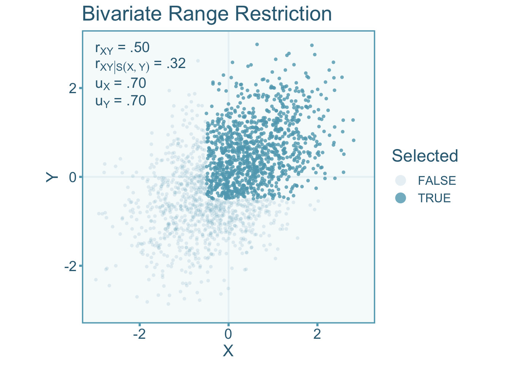
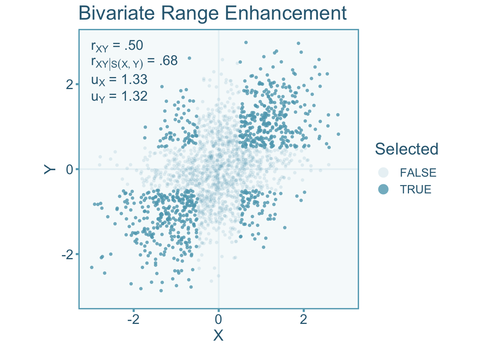

9 Direct Selection
9.1 Introduction
Direct selection occurs when subjects are explicitly selected based on some eligibility criterion on the variables of interest (rather than a third variable). Range restriction is a form of selection bias that describes a situation where there is less variation in our sample then there is in the population. Whereas range enhancement indicates that there is more variation in a sample then there is in the population. Direct range restriction/enhancement biases the variances and effect size estimates.
9.2 An Example of Direct Range Restriction
Imagine a tech company that wants to assess the correlation between years of experience and programming proficiency for their software engineers. They have two primary divisions: Division A and Division B. Division A primarily hires entry-level software engineers, with less than 3 years of experience. Division B, on the other hand, hires experienced software engineers with more than 3 years of experience. The company decides to conduct a study to assess the correlation between years of experience and programming proficiency. However, they only collect data from Division A due to logistical reasons, assuming that the relationship found there would be represent the entire company. In this scenario, direct range restriction occurs because the sample used for the study (Division A) represents a narrow range of years of experience (0-3 years) compared to the broader range present in the entire company (0+ years). Consequently, the standard deviation will be smaller in the sample then it would if we had sampled from the entire company. As we will see in later sections of this chapter, the observed correlation between years of experience and programming proficiency would be attenuated, underestimating the true correlation.
9.3 A Direct Selection Function
A selection function described here is a type of indicator function that represents the mechanism of which observations are selected into a given sample. In the case of direct selection, the selection will be a function of the of the variable of interest, \(X\). We will denote a selection function as \(\mathcal{S}(X)\). The output of the selection function will be a binary: either the individual is selected \(\mathcal{S}(X)=1\) or rejected \(\mathcal{S}(X)=0\) (see Figure 9.1).

The functional form of the selection function is going to be described by some inequality of \(X\). The inequality will be dependent on the research context (e.g., the sampling procedure).
Direct selection on \(X\) will have a fairly straight forward effect on the distribution of \(X\). The probability density function of \(X\) (\(f(X)\)) under direct selection can be formally defined as,
\[ f\left(X|\mathcal{S}(X)\right) = f(X) \mathcal{S}(X) \]
We can visualize the distribution under direct selection in Figure 9.2. Note that this is a simple case where selection is done on a single variable (i.e., univariate direct selection). In practice, selection is often a function of multiple variables. For instance, bivariate direct selection occurs when the selection is a function of both variables of interest, \(\mathcal{S}(X,Y)\).
9.4 Quantifying Direct Selection-Induced Restriction/Enhancement with the u-ratio
The distribution of scores in the population of individuals will exhibit a greater (or lesser) degree of variability compared to the population that meets the selection criterion. Therefore the standard deviation of scores in the target population (\(\sigma_{X}\)) will differ from that of the population under direct selection on \(X\) (\(\sigma_{X|\mathcal{S}(X)}\)). To index the difference between the two standard deviations, we can calculate the \(u\)-ratio Wiernik and Dahlke (2020). The \(u\)-ratio is defined as the ratio between the standard deviations of the population (\(\sigma_{X|\mathcal{S}(X)}\)) under selection and the target population (\(\sigma_{X}\)) such that,
\[ \upsilon_X = \frac{\sigma_{X|\mathcal{S}(X)}}{\sigma_{X}} \] Where \(\upsilon_{X}\) denotes the population \(u\)-ratio. The \(u\)-ratio in cases of range restriction will exist in the interval (0–1). Conversely, when the \(u\)-ratio is greater than 1 it is indicative of range enhancement. For a sample, the \(u\)-ratio is calculated from sample standard deviations,
\[ u_X = \frac{S_{X|\mathcal{S}(X)}}{S_X} \]
Where \(u_{X}\) denotes the sample \(u\)-ratio. The target population standard deviation is often quite difficult to estimate since generally we do not have access to an estimate of the population of interest. However, the unrestricted standard deviation can be estimated from some reference or norm study that is representative of the population of interest. This often comes in the form of standardization samples or norm samples (obtained from test manuals) if the population of interest is the general population. For example, the distribution full-scale IQ scores derived from the Wechsler Adult Intelligence Test has a standard deviation of 15 in the US population (Wechsler 2008). We can use this estimate as the standard deviation for the target population. Lets say we select a sample from members of Mensa, a high IQ society, where members are specifically selected on the basis high IQ scores. If the standard deviation of Mensa members is 5, then the \(u\)-ratio would be,
\[ u_x = \frac{S_{X|\mathcal{S}(X)}}{S_X} = \frac{5}{15}= .33\, . \]
If an estimate of the population standard deviation is not readily available, then a reliability coefficient from the reference sample and the sample under selection can be used to estimate the \(u\)-ratio,
\[ u_X = \sqrt{\frac{1-r_{XX'}}{1-r_{XX'|\mathcal{S}(X)}}}. \]
Where \(r_{XX'|\mathcal{S}(X)}\) and \(r_{XX'}\) are the reliability estimates within the selected and reference sample respectively.
9.5 Correcting Correlations for Direct Range Restriction
9.5.1 Defining our Target Quantity
We want to estimate the correlation in the target population between true scores of the independent (\(T\)) and dependent variable (\(U\)). Within a study that suffers from direct selection and measurement error, the observed score correlation will be biased relative to our target true score population correlation, \(\rho_{TU}\). We can model observed score correlations under univariate direct selection as,
\[ r_{XY|\mathcal{S}(X)} = a \rho_{TU} + e \]
or under bivariate direct selection,
\[ r_{XY|\mathcal{S}(X,Y)} = a \rho_{TU} + e. \]
Where \(a\) is the artifact attenuation/inflation factor and \(e\) is the sampling error term. In either case, an unbiased estimate of the total population true score correlation can be estimated by dividing by an estimate of \(a\),
\[ r_{XY|\mathcal{S}(X)} = a \rho_{TU} + e \]
or
\[ r_{XY|\mathcal{S}(X,Y)} = a \rho_{TU} + e. \]
9.5.2 Artifact Correction for Correlations
The Univariate Case
Range restriction (or enhancement) in either the independent or dependent variable will induce bias into the correlation coefficient. Let us consider a case where a study directly selects on \(X\) and not \(Y\). It is important to note, that if there is direct selection one of the two variables, then there will be indirect selection in the other variable too if the two are correlated. This would suggest that if \(u_X\neq 1\) and \(\rho_{XY}\neq 0\) then \(u_Y\neq 1\). Lets visualize the correlation between independent (\(X\)) and dependent (\(Y\)) variables under univariate direct range restriction (see Figure 9.3) by only selecting individuals above some cut off such that,
\[ \mathcal{S}(X) = \begin{cases}1 & \text{if }X\geq-.50\\ 0 & \text{if }X<-.50 \end{cases} \]
The scores of individuals that have been selected will show less variance than the population pool. Specifically, the scenario below shows a \(u\)-ratio of \(u_X=0.69\) in the independent variable. We see in Figure 9.3 that the correlation in the restricted scores (\(r_{XY|\mathcal{S}(X)}\)) are attenuated relative to the unrestricted correlation (\(r_{XY}\), indicative of \(a<1\)).

We can also visualize what happens to the correlation when the range is enhanced. Enhancement can be accomplished by selecting individuals at the ends of the distribution (Taylor and Griess 1976). Therefore we can define the selection function for Figure 9.4 as,
\[ \mathcal{S}(X) = \begin{cases}1 & \text{if }X\leq-.50 \text{ or } X\geq.50\\0 & \text{if }X>-.50 \text{ or } X<.50\end{cases} \]
In the visualization below, we see an opposite effect on the correlation, that is, an inflation of the unrestricted correlation rather than an attenuation (indicating \(a>1\)) like we see under range restriction. The scenario below has a \(u\)-ratio \(u_X=1.26\) in the independent variable.

It starts to become apparent that if \(u_X>1\) (i.e., \(S_X>S_{X|\mathcal{S}(X)}\)) the observed correlation is inflated and when \(u_X<1\) it becomes attenuated (Sackett and Yang 2000).
The attenuation/inflation of the correlation is dependent on the magnitude of the correlation, this is due to the fact that selection occurs on \(X\) and \(X\) is correlated with \(Y\), there will also be indirect range restriction in \(Y\). Therefore unlike other artifacts that have been discussed so far, range restriction/enhancement depends not only on the artifact value (i.e., the \(u\)-ratio), but also on the restricted correlation (Hunter, Schmidt, and Le 2006). The attenuation/inflation factor can be estimated as (adapted from equation 4, Hunter, Schmidt, and Le 2006),
\[ \hat{a} = u_X \sqrt{1+r_{XY|\mathcal{S}(X)}^2\left(\frac{1}{u_X}-1\right)} \]
A bias correction formula for univariate direct selection was first developed by Pearson (1903) and also provided more recently by Hunter, Schmidt, and Le (2006) and Wiernik and Dahlke (2020). To correct for the systematic bias in correlations, we can divide the correlation under selection by the attenuation factor,
\[ r_{XY} = \frac{r_{XY|\mathcal{S}(X)}}{\hat{a}} = \frac{r_{XY|\mathcal{S}(X)}}{u_X\sqrt{1+r_{XY|\mathcal{S}(X)}^2\left(\frac{1}{u^2_X}-1\right)}}. \tag{9.1}\]
Where the standard error of the corrected correlation is,
\[ se(r_{XY}) = \frac{se\left(r_{XY|\mathcal{S}(X)}\right)}{\hat{a}}. \tag{9.2}\]
If we want to also correct for measurement error in both samples, then we can also incorporate the reliability into these equations. Note that the following equations will incorporate the reliability within the selected sample (\(r_{XX'|\mathcal{S}(X)}\)) rather than the reference sample (\(r_{XX'}\)). If the reliability coefficient comes from the reference sample, then we can estimate the selected (restricted or enhanced) sample reliability with the corresponding \(u\)-ratio,
\[ r_{XX'|\mathcal{S}(X)} = 1-\frac{1-r_{XX'}}{u^2_X}. \tag{9.3}\]
Then we can use the reliability and \(u\)-ratios simultaneously to calculate a new attenuation/inflation factor that accounts for both bias in measurement error and direct selection,
\[ \hat{a} = u_X\sqrt{1-u_X^2(1-r_{XX'|\mathcal{S}(X)})}\sqrt{r_{YY'|\mathcal{S}(X)}+r_{XY|\mathcal{S}(X)}^2\left(\frac{1}{u^2_X}-1\right)}. \]
In the following equation to obtain an unbiased estimate of the true score unrestricted population correlation (adapted from table 3, Wiernik and Dahlke 2020),
\[ \small{r_{TU}=\frac{r_{XY|\mathcal{S}(X)}}{\hat{a}} =\frac{r_{XY|\mathcal{S}(X)}}{u_X\sqrt{1-u_X^2(1-r_{XX'|\mathcal{S}(X)})}\sqrt{r_{YY'|\mathcal{S}(X)}+r_{XY|\mathcal{S}(X)}^2\left(\frac{1}{u^2_X}-1\right)}}} \]
Where the standard error can be corrected similarly,
\[ se(r_{TU}) = \frac{se(r_{XY|\mathcal{S}(X)})}{\hat{a}} \]
There are three important things to note about the equations in this section: 1) these corrections assume linearity and homoskedasticity in the target population population, 2) all these corrections show selection on the independent variable, \(X\), however it does not matter whether univariate selection is on \(X\) or \(Y\), the corrections can be applied in the same fashion (just remember to flip \(X\) and \(Y\) and vice versa in the equations), 3) The corrections assume that any range restriction/enhancement observed in the non-selection variable (in our example this would be \(Y\)) is mediated by the range restriction/enhancement in the variable under selection (i.e., \(X\)).
The Bivariate Case
Bivariate direct range restriction/enhancement occurs when selection occurs on both variables of interest, therefore the selection function will be a function of \(X\) and \(Y\). Let’s visualize the correlation between independent (\(X\)) and dependent (\(Y\)) variables under bivariate range restriction by only selecting individuals above some cut off point for both \(X\) and \(Y\) (see Figure 9.5). For this example the selection function is
\[ \mathcal{S}(X,Y) = \begin{cases}1 & \text{if } X\geq -.5 \text{ and }Y\geq-.5\\ 0 & \text{if }X<-.5 \text{ and }Y<-.5 \end{cases} \]
The scores of individuals that have been selected will show less variance than the entire pool of individuals. Specifically, the scenario below shows a \(u\)-ratio of about 0.70 in the independent variable and dependent variables. We see in the figure that the correlation in the restricted sample (\(r_{XY|\mathcal{S}(X,Y)}\)) is attenuated relative to the unrestricted correlation (\(r_{XY}\)).

Likewise let’s visualize what happens to the correlation when the range is enhanced. Enhancement in both variables can be accomplished by selecting individuals at the ends of the distribution of \(X\) and \(Y\). Therefore we can define the selection function as,
\[ \small{\mathcal{S}(X,Y) = \begin{cases}1 & \text{if } (X\leq -.5 \text{ or } X\geq .5) \text{ and } (Y\leq -.5 \text{ or } Y\geq .5) \\ 0 & \text{if }(X>-.5 \text{ or }X<.5) \text{ and }(Y>-.5 \text{ or }Y<.5) \end{cases}} \]
Note that this type of selection would be exceedingly rare to see in practice. In Figure 9.6, we see inflation of the enhanced correlation relative to the target correlation. The scenario below has a \(u\)-ratio of about 1.32 in both the independent variable and dependent variable.

A bias correction formula for bivariate range restriction is much more complicated than the univariate formulation. To break down the correction formula into simpler parts, let us first define a factor we will denote with the Greek letter \(\psi\),
\[ \psi = \frac{u_X u_Y\left(r_{XY|\mathcal{S}(X,Y)}^2-1\right)}{2r_{XY|\mathcal{S}(X,Y)}} \tag{9.4}\]
This factor contains all the parameters needed to correct the correlation coefficient under direct selection. An unbiased estimate of the target population correlation can obtained by the following correction formula (adapted from table 3 Wiernik and Dahlke 2020),
\[ r_{XY} = \psi + \text{sign}\left[r_{XY|\mathcal{S}(X,Y)}\right]\sqrt{\psi^2+1} \tag{9.5}\]
Where the standard error can be computed from calculating the artifact factor (\(a\)) from the corrected and restricted/enhanced correlation,
\[ se(r_{XY}) = \frac{se\left(r_{XY|\mathcal{S}(X,Y)}\right)}{\hat{a}}= \frac{se\left(r_{XY|\mathcal{S}(X,Y)}\right)}{\left[\frac{r_{XY|\mathcal{S}(X,Y)}}{r_{XY}}\right]}. \tag{9.6}\]
Now we can also incorporate measurement error into the correction formula. Note that the following equations will incorporate the reliability within the selected sample (\(r_{XX'|\mathcal{S}(X,Y)}\)) rather than the unrestricted population (\(r_{XX'}\); see Equation 9.3 on converting to the selected sample). Then we can use the restricted/enhanced (selected) sample reliability and the \(u\)-ratios in the following equation to obtain an unbiased estimate of the target true score population correlation,
\[ r_{TU} = \frac{\psi + \text{sign}\left[r_{XY|\mathcal{S}(X,Y)}\right]\sqrt{\psi^2+1}}{\sqrt{1-u_X^2\left(1-r_{XX'|\mathcal{S}(X,Y)}\right)}\sqrt{1-u_Y^2\left(1-r_{YY'|\mathcal{S}(X,Y)}\right)}}. \]
If the reliability coefficient comes from the unrestricted population, the formula simplifies to,
\[ r_{TU} = \frac{\psi + \text{sign}\left[r_{XY|\mathcal{S}(X,Y)}\right]\sqrt{\psi^2+1}}{\sqrt{r_{XX'}}\sqrt{r_{YY'}}}. \]
We can use the same equation as Equation 9.6 to calculate the corrected standard error. The standard error can then be calculated as,
\[ se(r_{TU}) = \frac{se\left(r_{XY|\mathcal{S}(X,Y)}\right)}{\hat{a}}= \frac{se\left(r_{XY|\mathcal{S}(X,Y)}\right)}{\left[\frac{r_{XY|\mathcal{S}(X,Y)}}{r_{TU}}\right]}. \]
9.6 Correcting Standardized Mean Differences for Direct Range Restriction
9.6.1 Defining our Target Quantity
The quantity of interest is the target population standardized mean difference between actual members of groups \(A\) and \(B\) on true scores, \(U\). We can denote this standardized mean difference as \(\delta_{GU}\). Within a study that suffers from direct selection, the observed standardized mean difference (\(d_{gY|\mathcal{S}(Y)}\)) will be biased relative to the target, \(\delta_{GU}\). We can model the observed standardized mean difference as,
\[ d_{gY|\mathcal{S}(Y)}= a \delta_{GU} + e. \]
Where \(a\) is the attenuation/inflation factor and \(e\) is the sampling error term. Therefore an unbiased estimate of the target population true score standardized mean difference would be computed from
\[ d_{GU} = \frac{ d_{gY|\mathcal{S}(Y)} }{ \hat{a}}. \]
9.6.2 Artifact Correction for Standardized Mean Difference
9.6.2.1 Selection on the Continuous Variable
To correct for direct selection on the continuous variable, we can first convert the observed standardized mean difference (\(d_{gY|\mathcal{S}(X)}\)) to a point-biserial correlation (\(r_{gY|\mathcal{S}(X)}\)). Converting \(d_{gY|\mathcal{S}(X)}\) to \(r_{gY|\mathcal{S}(X)}\) can be done by using the observed proportion of individuals in group \(A\) (or \(B\)), \(p_g\),
\[ r_{gY|\mathcal{S}(X)} = \frac{d_{gY|\mathcal{S}(X)}}{\sqrt{\frac{1}{p_g(1-p_g)}-d_{gY|\mathcal{S}(X)}^2}}. \]
We can then correct the point-biserial correlation for univariate direct selection using the formulas in Section 9.5.2. Note that if you want to correct for measurement error as well, replace \(r_{XX'}\) with \(r_{gg'}\) (i.e., group classification reliability; see chapter on group misclassification) whenever you are working with standardized mean differences. Once we obtained the corrected correlation, \(r_{GU}\), we can convert back to a standardized mean difference, we need to use an adjusted group proportions, \(p_g^*\):
\[ d_{GU} = \frac{r_{GU}}{\sqrt{p_g^*\left(1-p_g^*\right)\left(1-r_{GU}^2\right)}}. \]
Where \(p_g^*\) is
\[ p_g^* = \frac{1}{2}-\frac{1}{2}\sqrt{1-4p_g(1-p_g)\left[1+r_{gY|\mathcal{S}(Y)}^2\left(\frac{1}{u^2_X}-1\right)\right]} \]
The adjusted proportion, \(p_g^*\), can also be estimated from the proportion of individuals in the target population (e.g., the proportion of men vs women in the general population). This adjustment is necessary in order to account for indirect selection in the grouping variable when \(d\neq 0\). This is similar to the situation described in Section 9.5.2, where one variable suffers from direct range restriction and any variable that is correlated with it, will suffer from indirect selection. The corresponding corrected sampling error can also be computed with the observed and adjusted proportions such that,
\[ \small{se(d_{GU}) = \frac {se\left(d_{gY|\mathcal{S}(Y)}\right)\left(\frac{r_{GU}}{r_{gY|\mathcal{S}(Y)}}\right)^2} {\left(1+d_{gY|\mathcal{S}(Y)}^2p_g[1-p_g]\right)^2\left(d_o^2+\frac{1}{p_g(1-p_g)}\right)p^*(1-p_g^*)(1-r_{GU}^2)^3}.} \]